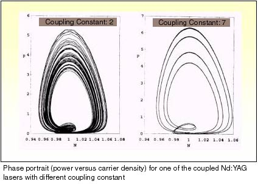

Transition to chaos through a sequence of period doubling bifurcation has been observed in many non-linear dynamical systems both in numerical simulations and in experiments. Lasers are good candidates for observing these bifurcation experimentally. One of the earliest experimental observations of this period doubling route to chaos was in a CO
2 lasers in which the cavity losses was modulated by an electro-optic modulator. Irregular intensity fluctuations in the frequency doubled output of a diode pumped multimode Nd-YAG laser with an intracavity KTP crystal has been investigated for sometime. Since the frequency doubled intensity is in the green region the problem came to be known as the "green problem".

We have shown that an Nd:YAG laser operating in two orthogonally polarized modes undergoes a sequence of reverse period doubling bifurcation from chaos to stability when the relative orientation between the KTP and the Nd: YAG crystal is varied continuously. In the chaotic regime there is a chaotic exchange of energy between the two modes. As the relative orientation is varied the energy exchange between the two orthogonally polarized modes become periodic. The transition from chaos to periodicity is also established by computing the Lyapunov exponents.
Suppression and control of chaos in dynamical systems has been another area which has generated a lot of research in the last decade. We have numerically studied a mechanism to suppress chaos in semiconductor lasers with high frequency current modulation. Such semiconductor lasers are known to exhibit chaotic behaviour for certain range of parameter value. In numerical studies, semiconductor lasers are modeled by rate equations for the photon density and carrier density. The current modulation provides the third degree of freedom necessary for the observation of chaos. Numerical investigations were carried out on two such chaotic lasers by coupling them in such a way that a current proportional to the output power of one laser was electronically fed into the input of the other. This effectively introduces a coupling between two lasers characterized by a coupling constant For small values of the coupling constant both lasers are chaotic. However, as the coupling increases the output follow a sequence of period doubling bifurcation to attain a steady state. Thus with appropriate values of the coupling constant, the chaos in either of the lasers could be suppressed. This is an interesting method to suppress chaos which could be experimentally implemented.